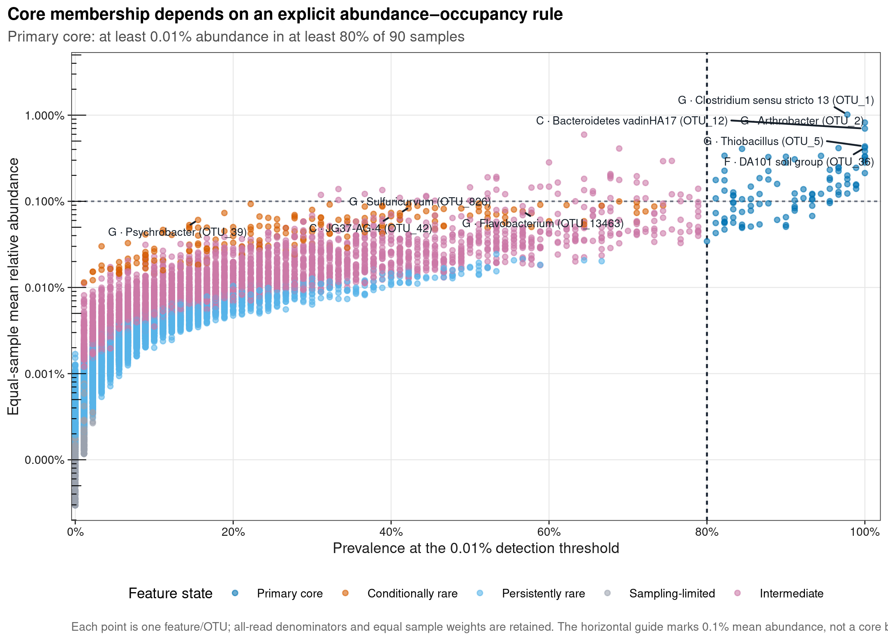
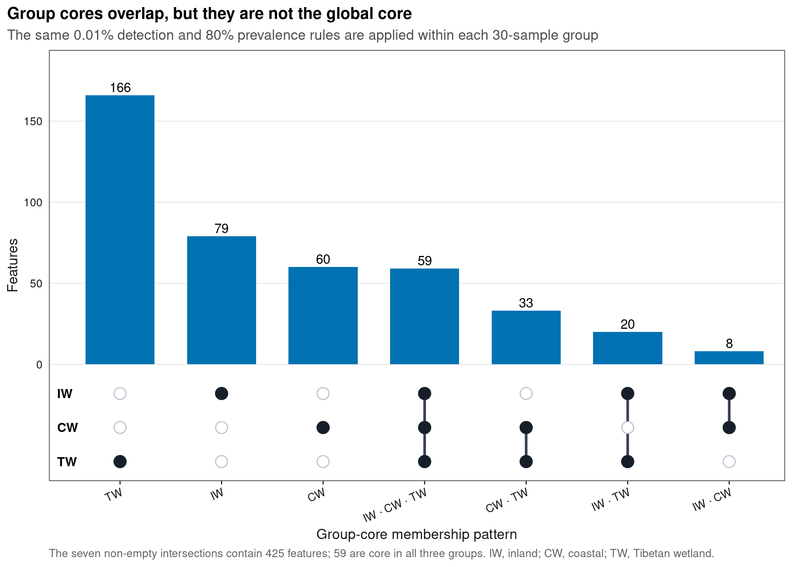
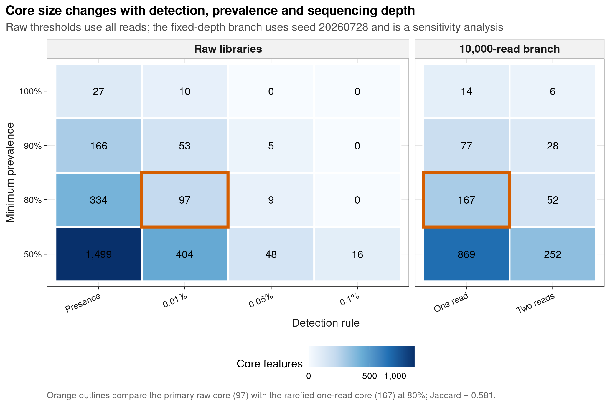
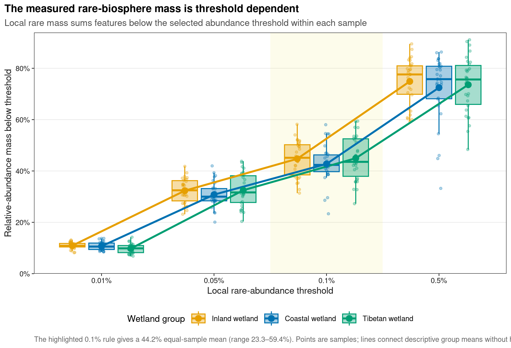

options(timeout = 600)
data_url <- "https://raw.githubusercontent.com/petemeng/microbiome-best-practices/3cb6a817e0c73ab7ecbec1cedc1ad80cbb9ecfaa/"
input_files <- c(
"data/small/metadata.tsv",
"data/small/otutab.tsv",
"data/small/taxonomy.tsv"
)
for (path in input_files) {
dir.create(dirname(path), recursive = TRUE, showWarnings = FALSE)
if (!file.exists(path)) download.file(paste0(data_url, path), path, mode = "wb", quiet = TRUE)
}核心菌群（core microbiome）+ 稀有生物圈
核心菌与稀有菌取决于明确的阈值定义
Core microbiome 常见于论文中的 abundance–occupancy 散点图、prevalence 阈值曲线、组间 core 集合交集图，以及 rare-biosphere 丰度分布图。它们都在回答同一个问题：哪些 feature 在指定样本集合中稳定达到可检测水平，哪些 feature 只在少数样本出现或始终维持低相对丰度？
本页使用 microeco 2.0.0 随包分发的中国湿地土壤 16S 数据。原研究 An et al. (2019)比较 inland、coastal 与 Tibetan wetland 的细菌群落；Liu et al. (2021)提供了可复现的三件套数据入口。这里从公开 count、taxonomy 和 metadata 重新计算并绘制四张原创图。
重要先给结论
主分析在原始 feature/OTU 层使用全部 reads 为分母：某 feature 在单样本相对丰度 ≥0.01% 时记为 detected，在 ≥80% 的 90 个样本中 detected 时记为 global core。这个操作性定义得到 97 个 core features，合计占等样本平均相对丰度的 17.04%；其中 34 个 feature 的全局均值仍低于 0.1%，因此 core 不等于 abundant。
同一规则分别用于 30 个 inland、30 个 coastal 和 30 个 Tibetan wetland 样本时，组内 core 分别为 166、160、278 个；三组共有 59 个，并集为 425 个。global core 与“三组各自都是 core”的交集不是同一个集合。
阈值和深度会改变结论。在 80% prevalence 下，只要求 presence 得到 334 个 core；检测阈值改为 0.01%、0.05%、0.1% 后依次为 97、9、0 个。把每个样本固定稀释到 10,000 reads 后，以至少 1 read 检出得到 167 个 core，与主 core 的 Jaccard 为 0.581。
按单样本 0 < relative abundance < 0.1% 定义 local rare mass，其等权均值为 44.15%，范围为 23.33%–59.43%。这个比例是阈值下的相对丰度质量，不是“44.15% 的细胞处于休眠”或“44.15% 的功能来自稀有菌”。
下载并读取本次分析的数据
需要 R，以及 ggplot2、ggrepel、ragg、readr、scales、svglite、vegan。本次使用中国湿地的 OTU count 表、分类表和样本信息表。
在一个新建的文件夹中运行以下代码，下载文件后按文中的顺序继续分析：
library(ggplot2)
set.seed(20260728)
font_pub <- "sans"
pal_pub <- c(
blue = "#0072B2",
orange = "#E69F00",
green = "#009E73",
vermillion = "#D55E00",
purple = "#CC79A7",
sky = "#56B4E9",
yellow = "#F0E442",
grey = "#6B7280"
)
scale_color_pub <- function(..., values = unname(pal_pub)) {
ggplot2::scale_color_manual(..., values = values)
}
scale_fill_pub <- function(..., values = unname(pal_pub)) {
ggplot2::scale_fill_manual(..., values = values)
}
theme_pub <- function(base_size = 10, base_family = font_pub) {
ggplot2::theme_bw(base_size = base_size, base_family = base_family) +
ggplot2::theme(
panel.grid.minor = ggplot2::element_blank(),
panel.grid.major = ggplot2::element_line(
colour = "#E6E6E6", linewidth = 0.25
),
axis.text = ggplot2::element_text(colour = "#1A1A1A"),
axis.title = ggplot2::element_text(colour = "#1A1A1A"),
axis.ticks = ggplot2::element_line(
colour = "#1A1A1A", linewidth = 0.3
),
plot.title.position = "plot",
plot.title = ggplot2::element_text(
face = "bold", size = ggplot2::rel(1.15)
),
plot.subtitle = ggplot2::element_text(colour = "#4D4D4D"),
plot.caption = ggplot2::element_text(colour = "#666666", hjust = 0),
strip.background = ggplot2::element_rect(
fill = "#F2F2F2", colour = "#B3B3B3", linewidth = 0.3
),
strip.text = ggplot2::element_text(face = "bold"),
legend.key = ggplot2::element_blank(),
legend.position = "top"
)
}
save_pub <- function(
plot, file_base, width = 89, height = 70, units = "mm",
dpi = 600, write_svg = TRUE, write_tiff = TRUE,
base_family = font_pub
) {
dir.create(dirname(file_base), recursive = TRUE, showWarnings = FALSE)
ggplot2::ggsave(
paste0(file_base, ".pdf"), plot,
width = width, height = height, units = units,
device = grDevices::cairo_pdf, family = base_family, bg = "white"
)
if (isTRUE(write_svg)) {
ggplot2::ggsave(
paste0(file_base, ".svg"), plot,
width = width, height = height, units = units,
device = svglite::svglite, bg = "white"
)
}
ggplot2::ggsave(
paste0(file_base, ".png"), plot,
width = width, height = height, units = units, dpi = dpi,
device = ragg::agg_png, bg = "white"
)
if (isTRUE(write_tiff)) {
ggplot2::ggsave(
paste0(file_base, ".tiff"), plot,
width = width, height = height, units = units, dpi = dpi,
device = ragg::agg_tiff, compression = "lzw", bg = "white"
)
}
invisible(plot)
}
clean_taxon <- function(x, rank_name) {
x <- trimws(as.character(x))
x <- sub("^[A-Za-z]__", "", x)
missing <- is.na(x) | x == "" | tolower(x) %in% c(
"unassigned", "unclassified", "unknown", "na", "nan"
)
x[missing] <- paste("Unknown", tolower(rank_name))
x
}
jaccard <- function(a, b) {
union_n <- sum(a | b)
if (union_n == 0L) 1 else sum(a & b) / union_n
}读取三件套并核对结构
read_keyed_tsv <- function(path) {
x <- readr::read_tsv(
path,
show_col_types = FALSE,
progress = FALSE,
name_repair = "minimal",
na = character(),
col_types = readr::cols(.default = readr::col_character())
)
ids <- as.character(x[[1L]])
stopifnot(!anyDuplicated(ids))
out <- as.data.frame(x[-1L], check.names = FALSE)
rownames(out) <- ids
out
}
input_paths <- c(
otutab = "data/small/otutab.tsv",
taxonomy = "data/small/taxonomy.tsv",
metadata = "data/small/metadata.tsv"
)
expected_sha256 <- c(
otutab = "76fa79c38da889f35978dc86da4641a270961746709ff38049ee5f67e3c6f7a3",
taxonomy = "725280bb9a0cd9bda7b540022e92af945ceed52527f8b2d220b055b4489f6901",
metadata = "df24771dccf27607ddf922c6bca2cafa876d946fbe2e09d14b601accce66ba64"
)
observed_sha256 <- vapply(
input_paths,
function(path) digest::digest(
file = path, algo = "sha256", serialize = FALSE
),
character(1)
)
stopifnot(identical(observed_sha256, expected_sha256))
otutab <- read_keyed_tsv(input_paths[["otutab"]])
taxonomy <- read_keyed_tsv(input_paths[["taxonomy"]])
metadata <- read_keyed_tsv(input_paths[["metadata"]])
counts <- as.matrix(otutab)
storage.mode(counts) <- "integer"
stopifnot(
identical(rownames(counts), rownames(taxonomy)),
setequal(colnames(counts), rownames(metadata)),
all(counts >= 0L),
all(counts == round(counts)),
all(rowSums(counts) > 0L),
all(colSums(counts) > 0L)
)
metadata <- metadata[colnames(counts), , drop = FALSE]
group_codes <- c("IW", "CW", "TW")
group_display <- c(
IW = "Inland wetland",
CW = "Coastal wetland",
TW = "Tibetan wetland"
)
metadata$SampleID <- rownames(metadata)
metadata$GroupDisplay <- unname(group_display[metadata$Group])
sample_depths <- colSums(counts)
relative_feature <- sweep(counts, 2L, sample_depths, "/")
stopifnot(max(abs(colSums(relative_feature) - 1)) <= 1e-12)
data.frame(
Features = nrow(counts),
Samples = ncol(counts),
Reads = sum(counts),
MinimumDepth = min(sample_depths),
MaximumDepth = max(sample_depths)
) Features Samples Reads MinimumDepth MaximumDepth
1 13628 90 1619670 10364 37374先查看三张表的真实结构：
otutab[1:5, 1:5, drop = FALSE]
taxonomy[1:6, , drop = FALSE]
metadata[1:6, , drop = FALSE] S1 S2 S3 S4 S5
OTU_4272 1 0 1 1 0
OTU_236 1 4 0 2 35
OTU_399 9 2 2 4 4
OTU_1556 5 18 7 3 2
OTU_32 83 9 19 8 102
Kingdom Phylum
OTU_4272 k__Bacteria p__Firmicutes
OTU_236 k__Bacteria p__Chloroflexi
OTU_399 k__Bacteria p__Proteobacteria
OTU_1556 k__Bacteria p__Acidobacteria
OTU_32 k__Archaea p__Miscellaneous Crenarchaeotic Group
OTU_706 k__Bacteria p__Actinobacteria
Class Order Family
OTU_4272 c__Bacilli o__Bacillales f__
OTU_236 c__ o__ f__
OTU_399 c__Betaproteobacteria o__Nitrosomonadales f__Nitrosomonadaceae
OTU_1556 c__Acidobacteria o__Subgroup 17 f__
OTU_32 c__ o__ f__
OTU_706 c__Actinobacteria o__Frankiales f__Nakamurellaceae
Genus Species
OTU_4272 g__ s__
OTU_236 g__ s__
OTU_399 g__ s__
OTU_1556 g__ s__
OTU_32 g__ s__
OTU_706 g__Nakamurella s__
Group Type Saline SampleID GroupDisplay
S1 IW NE Non-saline soil S1 Inland wetland
S2 IW NE Non-saline soil S2 Inland wetland
S3 IW NE Non-saline soil S3 Inland wetland
S4 IW NE Non-saline soil S4 Inland wetland
S5 IW NE Non-saline soil S5 Inland wetland
S6 IW NE Non-saline soil S6 Inland wetland下载完整 R 脚本。脚本包含数据下载、计算和图形导出。
首次使用时安装 R 包
install.packages(c(
"digest", "ggplot2", "ggrepel", "jsonlite", "ragg", "readr",
"scales", "svglite", "systemfonts", "vegan"
))core 与 rare 都是带条件的操作性定义
Core 至少需要四个同时公开的坐标
对 feature i 和样本 j，先计算全部 reads 分母下的相对丰度；给定 detection threshold d，再计算 occupancy 或 prevalence：
p[i,j] = x[i,j] / Σ(all features in sample j)
o[i](d) = detected samples for feature i / all samples主 core 集合可写成：
C(d, π) = {feature i : o[i](d) ≥ π}
d = 0.0001 (0.01%); π = 0.80 (80%)因此一个可复查的 core 声明至少要写清：feature resolution、样本集合、detection threshold 及其边界、prevalence threshold 及其边界。Neu et al. (2021)强调 core 定义的多样性；Custer et al. (2023)的比较也说明 occupancy-based 方法表现稳健，但任何具体阈值仍依赖研究问题和丰度分布。
Presence 不是统一的检测强度
原始文库深度为 10,364–37,374 reads。0.01% 阈值在这些样本中对应至少 2–4 reads；单纯 count > 0 则永远只要求 1 read。后者会让深测序样本更容易记录低丰度 feature。固定深度稀释可以暴露这种敏感性，但会丢弃 reads，并引入一次随机抽样，所以这里只把它作为审计分支，不替代主相对丰度定义。Salonen et al. (2012)已经展示了 analysis depth 对 core 识别的影响。
全体样本与分组内核心菌的分母不同
Global prevalence 的分母是全部 90 个样本；group prevalence 的分母是各组 30 个样本。某 feature 可以在 90 个样本中达到 80%，却因其中一组低于 80% 而不属于“三组共有 core”；也可以只在一个组稳定出现，从而属于 group-specific core，却不是 global core。
集合图只有在各组使用同一 feature resolution、detection rule 和 prevalence rule 时才可比较。它展示集合结构，不提供差异显著性。
Rare 至少有“局部丰度”和“跨样本状态”两层
本页同时保留两个互补定义：
- Local rare mass：在每个样本内，汇总
0 < p < 0.1%的 feature 相对丰度； - Feature state：根据 90 个样本中的均值、最大值、occupancy 和总 reads，把每个 feature 放入一个互斥类别。
Feature state 依次判定为：
Primary core：满足 0.01% / 80% 主规则；Sampling-limited：非 core、总 reads ≤10 且只在 ≤2 个样本出现；Conditionally rare：非 core、全局均值 <0.1%，但至少一个样本达到 1%；Persistently rare：非 core，且所有样本都低于 0.1%；Intermediate：其余 feature。
Conditionally rare 在这里是跨样本丰度模式，不能替代时间序列中的动态证据。Shade et al. (2014)讨论的是 rare taxa 随时间偶发升高；横断面数据只能说“在部分样本达到较高丰度”，不能写成激活、爆发或恢复。Sampling-limited 更只是当前 read/occupancy 证据不足，不能直接解释为生态稀有。
深入：为什么 core abundance mass 与 local rare mass 可以同时很高
两者不是互补分区。Core membership 看一个 feature 在多少样本达到 0.01%；local rare mass 则在每个样本内把低于 0.1% 的 feature 相加。一个全局 core feature 可以稳定高于 0.01%，但在许多样本仍低于 0.1%，于是同时进入 core 集合和这些样本的 local rare mass。若要做严格闭合分区，应使用后面的五类 FeatureState，其丰度质量合计才等于 100%。
用检出率和丰度共同定义核心菌群
预先确定 0.01% 丰度和 80% 检出率阈值
primary_detection <- 0.0001
primary_prevalence <- 0.80
primary_rare_threshold <- 0.001
primary_seed <- 20260728L
detected_primary <- relative_feature >= primary_detection
detected_samples <- rowSums(detected_primary)
global_prevalence <- detected_samples / ncol(counts)
global_core <- global_prevalence >= primary_prevalence
feature_equal_mean <- rowMeans(relative_feature)
feature_pooled <- rowSums(counts) / sum(counts)
feature_maximum <- apply(relative_feature, 1L, max)
positive_samples <- rowSums(counts > 0L)
data.frame(
DetectionThreshold = primary_detection,
PrevalenceThreshold = primary_prevalence,
CoreFeatures = sum(global_core),
CoreAbundanceMass = sum(feature_equal_mean[global_core]),
CoreBelowPointOnePercentMean = sum(
global_core & feature_equal_mean < primary_rare_threshold
)
) DetectionThreshold PrevalenceThreshold CoreFeatures CoreAbundanceMass
1 1e-04 0.8 97 0.1703612
CoreBelowPointOnePercentMean
1 34这里使用 >=，因此刚好等于 0.01% 或 80% 的记录被纳入。不要把边界藏在自然语言里；> 与 >= 在临界 feature 上可能给出不同集合。
保留每个特征的分类信息，不合并来源不同的未注释特征
rank_names <- c(
"Kingdom", "Phylum", "Class", "Order", "Family", "Genus", "Species"
)
rank_prefix <- c(
Kingdom = "K", Phylum = "P", Class = "C", Order = "O",
Family = "F", Genus = "G", Species = "S"
)
taxonomy_clean <- as.data.frame(
setNames(
lapply(
rank_names,
function(rank_name) clean_taxon(taxonomy[[rank_name]], rank_name)
),
rank_names
),
check.names = FALSE,
stringsAsFactors = FALSE
)
rownames(taxonomy_clean) <- rownames(taxonomy)
known_matrix <- vapply(
rank_names,
function(rank_name) {
taxonomy_clean[[rank_name]] != paste("Unknown", tolower(rank_name))
},
logical(nrow(taxonomy_clean))
)
best_index <- apply(known_matrix, 1L, function(x) {
known <- which(x)
if (length(known) == 0L) 1L else max(known)
})
best_rank <- rank_names[best_index]
best_taxon <- vapply(
seq_len(nrow(taxonomy_clean)),
function(i) taxonomy_clean[[best_rank[[i]]]][[i]],
character(1)
)
display_label <- paste0(unname(rank_prefix[best_rank]), " · ", best_taxon)
lineage <- apply(taxonomy_clean, 1L, paste, collapse = " > ")Core 在原始 feature 层判定。若先按 genus 聚合，所有空 genus 可能被压成一个巨大的 Unknown genus，其 occupancy 是人工合并的结果，不能再叫作一个 core taxon。
分别计算全体核心菌、分组核心菌及其交集
group_core <- list()
group_prevalence <- list()
for (group_code in group_codes) {
ids <- metadata$SampleID[metadata$Group == group_code]
group_prevalence[[group_code]] <- rowMeans(
detected_primary[, ids, drop = FALSE]
)
group_core[[group_code]] <-
group_prevalence[[group_code]] >= primary_prevalence
}
group_core_summary <- data.frame(
GroupCode = group_codes,
Group = unname(group_display[group_codes]),
Samples = vapply(
group_codes,
function(group_code) sum(metadata$Group == group_code),
integer(1)
),
CoreFeatures = vapply(group_core, sum, integer(1)),
stringsAsFactors = FALSE
)
shared_three <- sum(
group_core[["IW"]] & group_core[["CW"]] & group_core[["TW"]]
)
group_union <- sum(
group_core[["IW"]] | group_core[["CW"]] | group_core[["TW"]]
)
data.frame(
GlobalCore = sum(global_core),
SharedThreeGroupCore = shared_three,
GroupCoreUnion = group_union
)
group_core_summary GlobalCore SharedThreeGroupCore GroupCoreUnion
1 97 59 425
GroupCode Group Samples CoreFeatures
IW IW Inland wetland 30 166
CW CW Coastal wetland 30 160
TW TW Tibetan wetland 30 278生成七种非空 membership pattern：
membership_flags <- data.frame(
IW = group_core[["IW"]],
CW = group_core[["CW"]],
TW = group_core[["TW"]],
stringsAsFactors = FALSE
)
membership_key <- apply(membership_flags, 1L, function(x) {
active <- group_codes[as.logical(x[group_codes])]
if (length(active) == 0L) "None" else paste(active, collapse = " + ")
})
membership_levels <- c(
"IW", "CW", "TW", "IW + CW", "IW + TW", "CW + TW",
"IW + CW + TW", "None"
)
membership_counts <- table(factor(membership_key, levels = membership_levels))
core_membership_patterns <- data.frame(
Pattern = membership_levels,
IW = c(TRUE, FALSE, FALSE, TRUE, TRUE, FALSE, TRUE, FALSE),
CW = c(FALSE, TRUE, FALSE, TRUE, FALSE, TRUE, TRUE, FALSE),
TW = c(FALSE, FALSE, TRUE, FALSE, TRUE, TRUE, TRUE, FALSE),
CoreFeatures = as.integer(membership_counts),
stringsAsFactors = FALSE
)
core_membership_patterns Pattern IW CW TW CoreFeatures
1 IW TRUE FALSE FALSE 79
2 CW FALSE TRUE FALSE 60
3 TW FALSE FALSE TRUE 166
4 IW + CW TRUE TRUE FALSE 8
5 IW + TW TRUE FALSE TRUE 20
6 CW + TW FALSE TRUE TRUE 33
7 IW + CW + TW TRUE TRUE TRUE 59
8 None FALSE FALSE FALSE 13203同时扫描 detection、prevalence 与 read depth
detection_thresholds <- c(0, 0.0001, 0.0005, 0.001)
detection_labels <- c("Presence", "0.01%", "0.05%", "0.1%")
prevalence_thresholds <- c(0.50, 0.80, 0.90, 1.00)
threshold_rows <- list()
for (detection_i in seq_along(detection_thresholds)) {
threshold <- detection_thresholds[[detection_i]]
detected <- if (threshold == 0) {
counts > 0L
} else {
relative_feature >= threshold
}
prevalence <- rowMeans(detected)
for (prevalence_threshold in prevalence_thresholds) {
mask <- prevalence >= prevalence_threshold
threshold_rows[[length(threshold_rows) + 1L]] <- data.frame(
DetectionThreshold = threshold,
DetectionLabel = detection_labels[[detection_i]],
PrevalenceThreshold = prevalence_threshold,
PrevalenceLabel = scales::percent(prevalence_threshold, accuracy = 1),
CoreFeatures = sum(mask),
CoreAbundanceMass = sum(feature_equal_mean[mask]),
stringsAsFactors = FALSE
)
}
}
core_threshold_sensitivity <- do.call(rbind, threshold_rows)
core_threshold_sensitivity DetectionThreshold DetectionLabel PrevalenceThreshold PrevalenceLabel
1 0e+00 Presence 0.5 50%
2 0e+00 Presence 0.8 80%
3 0e+00 Presence 0.9 90%
4 0e+00 Presence 1.0 100%
5 1e-04 0.01% 0.5 50%
6 1e-04 0.01% 0.8 80%
7 1e-04 0.01% 0.9 90%
8 1e-04 0.01% 1.0 100%
9 5e-04 0.05% 0.5 50%
10 5e-04 0.05% 0.8 80%
11 5e-04 0.05% 0.9 90%
12 5e-04 0.05% 1.0 100%
13 1e-03 0.1% 0.5 50%
14 1e-03 0.1% 0.8 80%
15 1e-03 0.1% 0.9 90%
16 1e-03 0.1% 1.0 100%
CoreFeatures CoreAbundanceMass
1 1499 0.59976021
2 334 0.31770343
3 166 0.21996271
4 27 0.07022308
5 404 0.35945370
6 97 0.17036121
7 53 0.11923113
8 10 0.04213067
9 48 0.12443783
10 9 0.03881217
11 5 0.02587754
12 0 0.00000000
13 16 0.06323718
14 0 0.00000000
15 0 0.00000000
16 0 0.00000000再把相对丰度阈值翻译成每个原始文库需要的最少 reads：
detection_count_audit <- do.call(rbind, lapply(seq_along(sample_depths), function(i) {
data.frame(
SampleID = names(sample_depths)[[i]],
GroupCode = metadata[names(sample_depths)[[i]], "Group"],
LibrarySize = sample_depths[[i]],
DetectionThreshold = detection_thresholds,
DetectionLabel = detection_labels,
MinimumReads = ifelse(
detection_thresholds == 0,
1L,
ceiling(sample_depths[[i]] * detection_thresholds)
),
stringsAsFactors = FALSE
)
}))
subset(detection_count_audit, DetectionLabel == "0.01%")[1:8, ]
range(subset(
detection_count_audit,
DetectionLabel == "0.01%"
)$MinimumReads) SampleID GroupCode LibrarySize DetectionThreshold DetectionLabel
2 S1 IW 25542 1e-04 0.01%
6 S2 IW 26764 1e-04 0.01%
10 S3 IW 12843 1e-04 0.01%
14 S4 IW 13280 1e-04 0.01%
18 S5 IW 17640 1e-04 0.01%
22 S6 IW 22525 1e-04 0.01%
26 S7 IW 17370 1e-04 0.01%
30 S9 IW 25295 1e-04 0.01%
MinimumReads
2 3
6 3
10 2
14 2
18 2
22 3
26 2
30 3
[1] 2 4固定深度分支使用相同 seed，并重复一次验证确定性：
rarefaction_depth <- 10000L
set.seed(primary_seed)
rarefied_counts <- t(vegan::rrarefy(
t(counts),
sample = rarefaction_depth
))
set.seed(primary_seed)
rarefied_repeat <- t(vegan::rrarefy(
t(counts),
sample = rarefaction_depth
))
stopifnot(
identical(rarefied_counts, rarefied_repeat),
all(colSums(rarefied_counts) == rarefaction_depth)
)
raw_presence_core <- rowMeans(counts > 0L) >= primary_prevalence
rarefied_one_read_prevalence <- rowMeans(rarefied_counts > 0L)
rarefied_two_read_prevalence <- rowMeans(rarefied_counts >= 2L)
rarefied_one_read_core <-
rarefied_one_read_prevalence >= primary_prevalence
rarefied_two_read_core <-
rarefied_two_read_prevalence >= primary_prevalence
depth_sensitivity <- data.frame(
Definition = c(
"Raw presence", "Raw 0.01%", "Rarefied one read", "Rarefied two reads"
),
CoreFeatures = c(
sum(raw_presence_core),
sum(global_core),
sum(rarefied_one_read_core),
sum(rarefied_two_read_core)
),
JaccardWithPrimary = c(
jaccard(raw_presence_core, global_core),
1,
jaccard(rarefied_one_read_core, global_core),
jaccard(rarefied_two_read_core, global_core)
),
stringsAsFactors = FALSE
)
depth_sensitivity Definition CoreFeatures JaccardWithPrimary
1 Raw presence 334 0.2904192
2 Raw 0.01% 97 1.0000000
3 Rarefied one read 167 0.5808383
4 Rarefied two reads 52 0.5360825划分类群状态，并计算每个样本中的稀有类群占比
feature_state <- ifelse(
global_core,
"Primary core",
ifelse(
rowSums(counts) <= 10L & positive_samples <= 2L,
"Sampling-limited",
ifelse(
feature_equal_mean < primary_rare_threshold & feature_maximum >= 0.01,
"Conditionally rare",
ifelse(
feature_maximum < primary_rare_threshold,
"Persistently rare",
"Intermediate"
)
)
)
)
state_levels <- c(
"Primary core", "Conditionally rare", "Persistently rare",
"Sampling-limited", "Intermediate"
)
feature_state <- factor(feature_state, levels = state_levels)
feature_state_summary <- do.call(rbind, lapply(state_levels, function(state) {
mask <- feature_state == state
data.frame(
FeatureState = state,
Features = sum(mask),
FeatureFraction = mean(mask),
EqualSampleAbundanceMass = sum(feature_equal_mean[mask]),
stringsAsFactors = FALSE
)
}))
stopifnot(
sum(feature_state_summary$Features) == nrow(counts),
abs(sum(feature_state_summary$EqualSampleAbundanceMass) - 1) <= 1e-12
)
feature_state_summary FeatureState Features FeatureFraction EqualSampleAbundanceMass
1 Primary core 97 0.007117699 0.170361211
2 Conditionally rare 200 0.014675668 0.093886048
3 Persistently rare 8407 0.616891694 0.172682530
4 Sampling-limited 1155 0.084751981 0.001583944
5 Intermediate 3769 0.276562959 0.561486267rare_thresholds <- c(0.0001, 0.0005, 0.001, 0.005)
rare_threshold_labels <- c("0.01%", "0.05%", "0.1%", "0.5%")
rare_sample_rows <- list()
for (threshold_i in seq_along(rare_thresholds)) {
threshold <- rare_thresholds[[threshold_i]]
rare_mass <- colSums(
relative_feature *
(relative_feature > 0 & relative_feature < threshold)
)
rare_sample_rows[[threshold_i]] <- data.frame(
SampleID = colnames(counts),
GroupCode = metadata[colnames(counts), "Group"],
Group = unname(group_display[metadata[colnames(counts), "Group"]]),
Type = metadata[colnames(counts), "Type"],
Saline = metadata[colnames(counts), "Saline"],
RareThreshold = threshold,
ThresholdLabel = rare_threshold_labels[[threshold_i]],
RareMass = rare_mass,
stringsAsFactors = FALSE
)
}
rare_mass_all_thresholds <- do.call(rbind, rare_sample_rows)
rare_mass_by_sample <- subset(
rare_mass_all_thresholds,
RareThreshold == primary_rare_threshold
)
rare_threshold_sensitivity <- do.call(
rbind,
lapply(seq_along(rare_thresholds), function(i) {
x <- subset(
rare_mass_all_thresholds,
RareThreshold == rare_thresholds[[i]]
)
rows <- list(data.frame(
GroupCode = "ALL",
Group = "All samples",
RareThreshold = rare_thresholds[[i]],
ThresholdLabel = rare_threshold_labels[[i]],
Samples = nrow(x),
MeanRareMass = mean(x$RareMass),
MinimumRareMass = min(x$RareMass),
MaximumRareMass = max(x$RareMass),
stringsAsFactors = FALSE
))
for (group_code in group_codes) {
values <- x$RareMass[x$GroupCode == group_code]
rows[[length(rows) + 1L]] <- data.frame(
GroupCode = group_code,
Group = unname(group_display[group_code]),
RareThreshold = rare_thresholds[[i]],
ThresholdLabel = rare_threshold_labels[[i]],
Samples = length(values),
MeanRareMass = mean(values),
MinimumRareMass = min(values),
MaximumRareMass = max(values),
stringsAsFactors = FALSE
)
}
do.call(rbind, rows)
})
)
subset(rare_threshold_sensitivity, GroupCode == "ALL") GroupCode Group RareThreshold ThresholdLabel Samples MeanRareMass
1 ALL All samples 1e-04 0.01% 90 0.1046766
5 ALL All samples 5e-04 0.05% 90 0.3186408
9 ALL All samples 1e-03 0.1% 90 0.4415015
13 ALL All samples 5e-03 0.5% 90 0.7365072
MinimumRareMass MaximumRareMass
1 0.06829096 0.1422155
5 0.20080436 0.4381278
9 0.23329533 0.5943485
13 0.33219330 0.9110084汇总各特征的分类结果与敏感性分析
result_dir <- "results/28-core-rare-biosphere"
dir.create(result_dir, recursive = TRUE, showWarnings = FALSE)
feature_occupancy_abundance <- data.frame(
FeatureID = rownames(counts),
FeatureState = as.character(feature_state),
TotalReads = rowSums(counts),
PositiveSamples = positive_samples,
RawPresence = positive_samples / ncol(counts),
DetectedSamples = detected_samples,
Prevalence = global_prevalence,
EqualSampleMean = feature_equal_mean,
PooledReadFraction = feature_pooled,
MaximumSampleAbundance = feature_maximum,
PrimaryCore = global_core,
IWPrevalence = group_prevalence[["IW"]],
CWPrevalence = group_prevalence[["CW"]],
TWPrevalence = group_prevalence[["TW"]],
BestRank = best_rank,
BestTaxon = best_taxon,
DisplayLabel = display_label,
Lineage = lineage,
stringsAsFactors = FALSE,
check.names = FALSE
)
core_feature_taxonomy <- data.frame(
FeatureID = rownames(counts)[global_core],
taxonomy_clean[global_core, , drop = FALSE],
DetectedSamples = detected_samples[global_core],
Prevalence = global_prevalence[global_core],
EqualSampleMean = feature_equal_mean[global_core],
MaximumSampleAbundance = feature_maximum[global_core],
stringsAsFactors = FALSE,
check.names = FALSE
)
core_feature_taxonomy <- core_feature_taxonomy[
order(core_feature_taxonomy$EqualSampleMean, decreasing = TRUE),
, drop = FALSE
]
rarefaction_ledger <- data.frame(
SampleID = colnames(counts),
GroupCode = metadata[colnames(counts), "Group"],
OriginalLibrarySize = sample_depths,
RarefactionDepth = rarefaction_depth,
RarefiedLibrarySize = colSums(rarefied_counts),
ReadsDiscarded = sample_depths - colSums(rarefied_counts),
Seed = primary_seed,
stringsAsFactors = FALSE
)
readr::write_tsv(
feature_occupancy_abundance,
file.path(result_dir, "article-feature-occupancy-abundance.tsv")
)
readr::write_tsv(
core_feature_taxonomy,
file.path(result_dir, "article-core-feature-taxonomy.tsv")
)
readr::write_tsv(
group_core_summary,
file.path(result_dir, "article-group-core-summary.tsv")
)
readr::write_tsv(
core_membership_patterns,
file.path(result_dir, "article-core-membership-patterns.tsv")
)
readr::write_tsv(
core_threshold_sensitivity,
file.path(result_dir, "article-core-threshold-sensitivity.tsv")
)
readr::write_tsv(
detection_count_audit,
file.path(result_dir, "article-detection-count-audit.tsv")
)
readr::write_tsv(
rarefaction_ledger,
file.path(result_dir, "article-rarefaction-ledger.tsv")
)
readr::write_tsv(
depth_sensitivity,
file.path(result_dir, "article-depth-sensitivity.tsv")
)
readr::write_tsv(
feature_state_summary,
file.path(result_dir, "article-feature-state-summary.tsv")
)
readr::write_tsv(
rare_mass_by_sample,
file.path(result_dir, "article-rare-mass-by-sample.tsv")
)
readr::write_tsv(
rare_threshold_sensitivity,
file.path(result_dir, "article-rare-threshold-sensitivity.tsv")
)比较核心定义对阈值和测序深度的敏感性
Occupancy–abundance：core、rare 与中间状态放在同一坐标系
state_colours <- c(
`Primary core` = "#0072B2",
`Conditionally rare` = "#D55E00",
`Persistently rare` = "#56B4E9",
`Sampling-limited` = "#9CA3AF",
Intermediate = "#CC79A7"
)
occupancy_plot_data <- feature_occupancy_abundance
occupancy_plot_data$FeatureState <- factor(
occupancy_plot_data$FeatureState,
levels = state_levels
)
core_label_ids <- head(
rownames(counts)[global_core][order(
feature_equal_mean[global_core], decreasing = TRUE
)],
5L
)
conditional_mask <- feature_state == "Conditionally rare"
conditional_label_ids <- head(
rownames(counts)[conditional_mask][order(
feature_maximum[conditional_mask], decreasing = TRUE
)],
4L
)
occupancy_labels <- subset(
occupancy_plot_data,
FeatureID %in% c(core_label_ids, conditional_label_ids)
)
occupancy_labels$PointLabel <- paste0(
occupancy_labels$DisplayLabel,
" (",
occupancy_labels$FeatureID,
")"
)
occupancy_plot <- ggplot2::ggplot(
occupancy_plot_data,
ggplot2::aes(
x = Prevalence,
y = EqualSampleMean,
colour = FeatureState
)
) +
ggplot2::geom_hline(
yintercept = primary_rare_threshold,
colour = "#6B7280",
linewidth = 0.45,
linetype = "22"
) +
ggplot2::geom_vline(
xintercept = primary_prevalence,
colour = "#1F2937",
linewidth = 0.55,
linetype = "22"
) +
ggplot2::geom_point(size = 1.15, alpha = 0.58) +
ggrepel::geom_text_repel(
data = occupancy_labels,
ggplot2::aes(label = PointLabel),
seed = primary_seed,
family = font_pub,
size = 2.25,
colour = "#17202A",
box.padding = 0.25,
point.padding = 0.15,
min.segment.length = 0,
max.overlaps = Inf,
show.legend = FALSE
) +
ggplot2::scale_colour_manual(values = state_colours, drop = FALSE) +
ggplot2::scale_x_continuous(
limits = c(0, 1.01),
breaks = seq(0, 1, by = 0.2),
labels = scales::label_percent(accuracy = 1),
expand = ggplot2::expansion(mult = c(0.005, 0.01))
) +
ggplot2::scale_y_log10(
labels = scales::label_percent(accuracy = 0.001),
expand = ggplot2::expansion(mult = c(0.04, 0.16))
) +
ggplot2::annotation_logticks(sides = "l", linewidth = 0.25) +
ggplot2::labs(
title = "Core membership depends on an explicit abundance–occupancy rule",
subtitle = "Primary core: at least 0.01% abundance in at least 80% of 90 samples",
x = "Prevalence at the 0.01% detection threshold",
y = "Equal-sample mean relative abundance",
colour = "Feature state",
caption = paste(
"Each point is one feature/OTU; all-read denominators and equal sample weights are retained.",
"The horizontal guide marks 0.1% mean abundance, not a core boundary."
)
) +
theme_pub(base_size = 8.5) +
ggplot2::theme(
legend.position = "bottom",
panel.grid.minor = ggplot2::element_blank()
)
save_pub(
occupancy_plot,
"figures/28-occupancy-abundance",
width = 183,
height = 132
)
occupancy_plot
纵虚线右侧是 prevalence ≥80%，但只有满足单样本 0.01% detection rule 的 feature 才能到达这里。横虚线只标记全局均值 0.1%，不是 core 判定线；右下区域因此可以出现“稳定检出但平均丰度不高”的 core。
Group-core membership：交集图展示集合，不展示显著性
membership_plot_data <- subset(
core_membership_patterns,
Pattern != "None"
)
membership_plot_data <- membership_plot_data[
order(membership_plot_data$CoreFeatures, decreasing = TRUE),
, drop = FALSE
]
membership_plot_data$X <- seq_len(nrow(membership_plot_data))
membership_plot_data$PatternLabel <- gsub(
" \\+ ",
" · ",
membership_plot_data$Pattern
)
membership_y <- c(IW = -18, CW = -39, TW = -60)
membership_grid <- do.call(rbind, lapply(
seq_len(nrow(membership_plot_data)),
function(i) {
data.frame(
X = membership_plot_data$X[[i]],
GroupCode = group_codes,
Y = unname(membership_y[group_codes]),
Active = as.logical(membership_plot_data[i, group_codes]),
stringsAsFactors = FALSE
)
}
))
membership_segments <- do.call(rbind, lapply(
seq_len(nrow(membership_plot_data)),
function(i) {
active_y <- membership_y[group_codes[
as.logical(membership_plot_data[i, group_codes])
]]
data.frame(
X = membership_plot_data$X[[i]],
YMin = min(active_y),
YMax = max(active_y),
stringsAsFactors = FALSE
)
}
))
membership_plot <- ggplot2::ggplot(
membership_plot_data,
ggplot2::aes(x = X)
) +
ggplot2::geom_col(
ggplot2::aes(y = CoreFeatures),
width = 0.68,
fill = "#0072B2"
) +
ggplot2::geom_text(
ggplot2::aes(y = CoreFeatures, label = CoreFeatures),
vjust = -0.35,
family = font_pub,
size = 2.8
) +
ggplot2::geom_segment(
data = membership_segments,
ggplot2::aes(x = X, xend = X, y = YMin, yend = YMax),
inherit.aes = FALSE,
linewidth = 0.75,
colour = "#374151"
) +
ggplot2::geom_point(
data = membership_grid,
ggplot2::aes(x = X, y = Y),
inherit.aes = FALSE,
size = 3.1,
shape = 21,
stroke = 0.45,
colour = "#B8C0CC",
fill = "white"
) +
ggplot2::geom_point(
data = subset(membership_grid, Active),
ggplot2::aes(x = X, y = Y),
inherit.aes = FALSE,
size = 3.1,
colour = "#17202A"
) +
ggplot2::annotate(
"text",
x = 0.38,
y = unname(membership_y),
label = group_codes,
hjust = 0,
family = font_pub,
size = 2.7,
fontface = "bold"
) +
ggplot2::scale_x_continuous(
breaks = membership_plot_data$X,
labels = membership_plot_data$PatternLabel,
limits = c(0.3, nrow(membership_plot_data) + 0.55),
expand = ggplot2::expansion(mult = c(0, 0))
) +
ggplot2::scale_y_continuous(
breaks = c(0, 50, 100, 150),
labels = c("0", "50", "100", "150"),
limits = c(-72, 190),
expand = ggplot2::expansion(mult = c(0, 0.015))
) +
ggplot2::labs(
title = "Group cores overlap, but they are not the global core",
subtitle = "The same 0.01% detection and 80% prevalence rules are applied within each 30-sample group",
x = "Group-core membership pattern",
y = "Features",
caption = paste(
"The seven non-empty intersections contain 425 features; 59 are core in all three groups.",
"IW, inland; CW, coastal; TW, Tibetan wetland."
)
) +
theme_pub(base_size = 8.5) +
ggplot2::theme(
legend.position = "none",
panel.grid.major.x = ggplot2::element_blank(),
panel.grid.minor = ggplot2::element_blank(),
axis.text.x = ggplot2::element_text(angle = 24, hjust = 1),
axis.ticks.y = ggplot2::element_blank()
)
save_pub(
membership_plot,
"figures/28-group-core-membership",
width = 165,
height = 118
)
membership_plot
TW only 有 166 个 feature，并不等于它们在 Tibetan wetland “显著富集”。Membership 只说明达到阈值；若要比较 abundance 或 prevalence，还需要与研究设计匹配的模型、effect size 和多重检验。
Threshold × depth heatmap：把敏感性放进主结果
fixed_depth_rows <- list()
for (prevalence_threshold in prevalence_thresholds) {
fixed_depth_rows[[length(fixed_depth_rows) + 1L]] <- data.frame(
DetectionLabel = c("One read", "Two reads"),
PrevalenceThreshold = prevalence_threshold,
PrevalenceLabel = scales::percent(prevalence_threshold, accuracy = 1),
CoreFeatures = c(
sum(rarefied_one_read_prevalence >= prevalence_threshold),
sum(rarefied_two_read_prevalence >= prevalence_threshold)
),
stringsAsFactors = FALSE
)
}
fixed_depth_sensitivity <- do.call(rbind, fixed_depth_rows)
threshold_plot_data <- rbind(
data.frame(
Panel = "Raw libraries",
DetectionLabel = core_threshold_sensitivity$DetectionLabel,
PrevalenceLabel = core_threshold_sensitivity$PrevalenceLabel,
CoreFeatures = core_threshold_sensitivity$CoreFeatures,
stringsAsFactors = FALSE
),
data.frame(
Panel = "10,000-read branch",
DetectionLabel = fixed_depth_sensitivity$DetectionLabel,
PrevalenceLabel = fixed_depth_sensitivity$PrevalenceLabel,
CoreFeatures = fixed_depth_sensitivity$CoreFeatures,
stringsAsFactors = FALSE
)
)
threshold_plot_data$DetectionLabel <- factor(
threshold_plot_data$DetectionLabel,
levels = c(detection_labels, "One read", "Two reads")
)
threshold_plot_data$PrevalenceLabel <- factor(
threshold_plot_data$PrevalenceLabel,
levels = scales::percent(prevalence_thresholds, accuracy = 1)
)
threshold_plot_data$Panel <- factor(
threshold_plot_data$Panel,
levels = c("Raw libraries", "10,000-read branch")
)
primary_tiles <- subset(
threshold_plot_data,
(Panel == "Raw libraries" &
DetectionLabel == "0.01%" & PrevalenceLabel == "80%") |
(Panel == "10,000-read branch" &
DetectionLabel == "One read" & PrevalenceLabel == "80%")
)
primary_rarefied_jaccard <- jaccard(
global_core,
rarefied_one_read_core
)
threshold_plot <- ggplot2::ggplot(
threshold_plot_data,
ggplot2::aes(
x = DetectionLabel,
y = PrevalenceLabel,
fill = CoreFeatures
)
) +
ggplot2::geom_tile(colour = "white", linewidth = 0.7) +
ggplot2::geom_tile(
data = primary_tiles,
fill = NA,
colour = "#D55E00",
linewidth = 1.15
) +
ggplot2::geom_text(
ggplot2::aes(label = scales::comma(CoreFeatures)),
family = font_pub,
size = 3
) +
ggplot2::facet_grid(
. ~ Panel,
scales = "free_x",
space = "free_x"
) +
ggplot2::scale_fill_gradientn(
colours = c(
"#F7FBFF", "#C6DBEF", "#6BAED6", "#2171B5", "#08306B"
),
trans = "sqrt",
labels = scales::label_comma()
) +
ggplot2::labs(
title = "Core size changes with detection, prevalence and sequencing depth",
subtitle = "Raw thresholds use all reads; the fixed-depth branch uses seed 20260728 and is a sensitivity analysis",
x = "Detection rule",
y = "Minimum prevalence",
fill = "Core features",
caption = paste0(
"Orange outlines compare the primary raw core (97) with the rarefied one-read core (167) at 80%; ",
"Jaccard = ", sprintf("%.3f", primary_rarefied_jaccard), "."
)
) +
theme_pub(base_size = 9) +
ggplot2::theme(
legend.position = "bottom",
panel.grid = ggplot2::element_blank(),
axis.text.x = ggplot2::element_text(angle = 24, hjust = 1),
strip.text = ggplot2::element_text(size = 9)
)
save_pub(
threshold_plot,
"figures/28-threshold-depth-sensitivity",
width = 170,
height = 112
)
threshold_plot
如果主结论只在单一阈值格子出现，Methods 应承认其脆弱性。阈值网格不要求找到一个“结果最好看”的格子，而是让读者看到结论对操作定义的依赖程度。
Rare mass：同时展示单样本分布和阈值敏感性
group_colours <- c(
`Inland wetland` = "#E69F00",
`Coastal wetland` = "#0072B2",
`Tibetan wetland` = "#009E73"
)
rare_plot_data <- rare_mass_all_thresholds
rare_plot_data$ThresholdLabel <- factor(
rare_plot_data$ThresholdLabel,
levels = rare_threshold_labels
)
rare_plot_data$Group <- factor(
rare_plot_data$Group,
levels = unname(group_display[group_codes])
)
rare_group_means <- subset(
rare_threshold_sensitivity,
GroupCode %in% group_codes
)
rare_group_means$ThresholdLabel <- factor(
rare_group_means$ThresholdLabel,
levels = rare_threshold_labels
)
rare_group_means$Group <- factor(
rare_group_means$Group,
levels = unname(group_display[group_codes])
)
rare_plot <- ggplot2::ggplot(
rare_plot_data,
ggplot2::aes(
x = ThresholdLabel,
y = RareMass,
fill = Group,
colour = Group
)
) +
ggplot2::annotate(
"rect",
xmin = 2.5,
xmax = 3.5,
ymin = -Inf,
ymax = Inf,
fill = "#F0E442",
alpha = 0.10
) +
ggplot2::geom_boxplot(
width = 0.68,
outlier.shape = NA,
alpha = 0.35,
position = ggplot2::position_dodge(width = 0.78),
linewidth = 0.45
) +
ggplot2::geom_point(
size = 0.85,
alpha = 0.30,
position = ggplot2::position_jitterdodge(
jitter.width = 0.11,
dodge.width = 0.78,
seed = primary_seed
)
) +
ggplot2::geom_line(
data = rare_group_means,
ggplot2::aes(y = MeanRareMass, group = Group),
position = ggplot2::position_dodge(width = 0.78),
linewidth = 0.9
) +
ggplot2::geom_point(
data = rare_group_means,
ggplot2::aes(y = MeanRareMass),
position = ggplot2::position_dodge(width = 0.78),
size = 2.2,
shape = 21,
stroke = 0.7
) +
ggplot2::scale_fill_manual(values = group_colours, drop = FALSE) +
ggplot2::scale_colour_manual(values = group_colours, drop = FALSE) +
ggplot2::scale_y_continuous(
breaks = seq(0, 0.8, by = 0.2),
labels = scales::label_percent(accuracy = 1),
expand = ggplot2::expansion(mult = c(0, 0.01))
) +
ggplot2::coord_cartesian(ylim = c(0, 0.93)) +
ggplot2::labs(
title = "The measured rare-biosphere mass is threshold dependent",
subtitle = "Local rare mass sums features below the selected abundance threshold within each sample",
x = "Local rare-abundance threshold",
y = "Relative-abundance mass below threshold",
fill = "Wetland group",
colour = "Wetland group",
caption = paste(
"The highlighted 0.1% rule gives a 44.2% equal-sample mean (range 23.3–59.4%).",
"Points are samples; lines connect descriptive group means without hypothesis tests."
)
) +
theme_pub(base_size = 8.8) +
ggplot2::theme(
legend.position = "bottom",
panel.grid.major.x = ggplot2::element_blank()
)
save_pub(
rare_plot,
"figures/28-rare-biosphere-mass",
width = 170,
height = 116
)
rare_plot
0.01%、0.05%、0.1%、0.5% 四个阈值的总体 rare-mass 均值依次为 10.47%、31.86%、44.15%、73.65%。因此“稀有生物圈占比”必须和阈值同句出现，不能只报告一个脱离定义的百分比。
expected_threshold_counts <- c(
1499L, 334L, 166L, 27L,
404L, 97L, 53L, 10L,
48L, 9L, 5L, 0L,
16L, 0L, 0L, 0L
)
stopifnot(
sum(global_core) == 97L,
abs(sum(feature_equal_mean[global_core]) - 0.170361211031733) <= 1e-12,
identical(unname(group_core_summary$CoreFeatures), c(166L, 160L, 278L)),
shared_three == 59L,
group_union == 425L,
identical(core_threshold_sensitivity$CoreFeatures, expected_threshold_counts),
identical(depth_sensitivity$CoreFeatures, c(334L, 97L, 167L, 52L)),
abs(primary_rarefied_jaccard - 0.580838323353293) <= 1e-12,
identical(feature_state_summary$Features, c(97L, 200L, 8407L, 1155L, 3769L)),
abs(mean(rare_mass_by_sample$RareMass) - 0.441501476980241) <= 1e-12
)
audit_path <- file.path(result_dir, "validation-checks.tsv")
if (file.exists(audit_path)) {
validation_checks <- readr::read_tsv(
audit_path,
show_col_types = FALSE,
progress = FALSE
)
stopifnot(
nrow(validation_checks) == 320L,
all(validation_checks$status == "PASS")
)
data.frame(
Validation = "Repository QA",
Passed = sum(validation_checks$status == "PASS"),
Total = nrow(validation_checks)
)
} else {
data.frame(
Validation = "Inline reproducibility checks",
Passed = 10L,
Total = 10L
)
} Validation Passed Total
1 Repository QA 320 320常见坑
注意坑 1：只写‘出现在大多数样本’
必须同时报告 feature rank、样本集合、detection threshold、prevalence threshold 和 >/>= 边界。否则另一个分析者无法重建 core 集合。
注意坑 2：先把所有 Unknown genus 合并，再叫它 core taxon
多个无 genus 注释的 feature 被聚合后几乎必然获得更高 occupancy。Core 应先在 ASV/OTU 层判定；taxonomy 用于解释和汇总，不应创造一个人工的高 prevalence feature。
注意坑 3：把 1 read 当成各样本相同的 detection limit
原始文库越深，1 read 对应的相对丰度越低。至少同时展示相对丰度阈值对应的 read 数，并用固定深度或其他 detection model 检查敏感性。
注意坑 4：把 rarefaction 结果当作唯一真值
稀释会丢弃 reads，而且具体矩阵依赖随机抽样。固定 seed、记录丢弃 reads，把它用于 depth sensitivity；不要用一次抽样覆盖主相对丰度结果。
注意坑 5：把 low reads 写成生态稀有
总 reads ≤10 且只出现于 ≤2 个样本，首先意味着证据有限，也可能涉及测序错误、污染或标签跳跃。没有技术验证时，最多标为 Sampling-limited。
注意坑 6：把横断面的 conditionally rare 写成激活
本页只能识别“全局均值低、但在部分样本达到较高相对丰度”的模式。要证明时间上的稀有→优势转换，需要同一系统的纵向重复采样和相应模型。
注意坑 7：把相对丰度写成绝对细胞量、活性或功能
Core 和 rare 都由相对 read composition 定义。没有绝对负荷、RNA/代谢证据或功能实验时，不能推出细胞数量、活性、稳定性或功能贡献。
注意坑 8：对三组做检验，却忽略设计边界
示例 metadata 中 Group、Type 与 Saline 结构重叠，且没有 site、block 或 subject ID。本页只做描述性集合与敏感性分析，不把组间差异写成独立环境因素效应。
报告核心菌群与稀有类群定义的方法与限制
Core-microbiome membership was evaluated at the unaggregated feature/OTU level from the unrarefied count table. Counts were converted to within-sample relative abundances using all reads as the denominator. A feature was considered detected when its relative abundance was greater than or equal to 0.01%, and the global core was defined as features detected in at least 80% of the 90 samples. The identical detection and prevalence rules were applied separately to each 30-sample wetland group, and global, shared, and group-specific core sets were reported separately. Sensitivity analyses crossed detection thresholds of presence, 0.01%, 0.05%, and 0.1% with prevalence thresholds of 50%, 80%, 90%, and 100%. Sequencing-depth sensitivity was assessed after rarefying every sample to 10,000 reads with seed 20260728; this branch was not used as the primary abundance estimate. Local rare-biosphere mass was defined per sample as the summed relative abundance of detected features below 0.1%, with 0.01%, 0.05%, and 0.5% retained as sensitivity thresholds. Feature-state and group-set summaries were descriptive, and no absolute-abundance, activity, functional, or group-effect inference was made.
替换样本数、阈值、rarefaction depth 和分组变量即可。若你的 feature 是 ASV，应把 feature/OTU 改成 ASV；若主分析在 genus 层完成，必须说明聚合方式以及 Unknown 是否按 lineage 分开，不能沿用这里的 feature-level 描述。
将核心菌群与稀有类群定义用于自己的研究
只替换三件套路径和分组列
input_paths <- c(
otutab = "your_data/otutab.tsv",
taxonomy = "your_data/taxonomy.tsv",
metadata = "your_data/metadata.tsv"
)
group_column <- "Treatment"otutab 必须是 feature × sample；taxonomy 行名必须与 feature 完全一致；metadata 行名必须覆盖全部样本。技术重复应先按预声明规则恢复为生物学样本单位。
在分析前确定核心菌的判定规则
primary_feature_level <- "ASV"
primary_detection <- 0.0001
primary_prevalence <- 0.80
primary_rare_threshold <- 0.001
primary_denominator <- "all reads within each sample"
primary_sample_weight <- "equal biological samples"
primary_seed <- 20260728L阈值应结合 negative controls、mock community、测序深度和研究问题预先选择。不要看完哪组 core 更多后再调整阈值。
taxonomy 只有一列字符串时，先拆成七列
taxonomy_raw <- readr::read_tsv(
"your_data/taxonomy-single-column.tsv",
show_col_types = FALSE
)
rank_names_7 <- c(
"Kingdom", "Phylum", "Class", "Order", "Family", "Genus", "Species"
)
parts <- strsplit(taxonomy_raw$Taxon, ";", fixed = TRUE)
taxonomy_matrix <- t(vapply(parts, function(x) {
x <- trimws(x)
length(x) <- length(rank_names_7)
x
}, character(length(rank_names_7))))
taxonomy <- as.data.frame(taxonomy_matrix, stringsAsFactors = FALSE)
names(taxonomy) <- rank_names_7
rownames(taxonomy) <- taxonomy_raw$FeatureID先在原始 feature 层完成 core 判定，再把 taxonomy 附回结果。若确实要做 genus-level core，应按完整 lineage 聚合，不能把所有空 genus 合成一个标签。
重复测量或不平衡设计要改变 prevalence 分母
纵向研究中，同一受试者的多个时间点不是相互独立的 20 个“个体”。可以先定义 subject-level occupancy，再定义 cohort-level core；也可以分时间窗计算并用混合模型分析。无论选哪种方法，都要把分母单位写成 subject、sample 还是 visit。
报告结果时需要保留哪些信息
- feature-level abundance、occupancy、taxonomy 与状态全表；
- global core、各组 core、交集和并集成员表；
- detection × prevalence 完整阈值网格；
- 每个样本的 library depth 与阈值对应 read 数；
- 固定 seed、稀释深度、丢弃 reads 和集合 Jaccard；
- 每个样本的 local rare mass 与阈值敏感性；
- 图形尺寸、字体、PDF/SVG/PNG/TIFF 格式审计。
参考
- An J, Liu C, Wang Q, et al. Soil bacterial community structure in Chinese wetlands. Geoderma. 2019;337:290–299. doi:10.1016/j.geoderma.2018.09.035.
- Liu C, Cui Y, Li X, Yao M. microeco: an R package for data mining in microbial community ecology. FEMS Microbiology Ecology. 2021;97(2):fiaa255. doi:10.1093/femsec/fiaa255.
- Neu AT, Allen EE, Roy K. Defining and quantifying the core microbiome: Challenges and prospects. Proceedings of the National Academy of Sciences. 2021;118(51):e2104429118. doi:10.1073/pnas.2104429118.
- Custer GF, Gans M, van Diepen LTA, Dini-Andreote F, Buerkle CA. Comparative analysis of core microbiome assignments: implications for ecological synthesis. mSystems. 2023;8(1):e01066-22. doi:10.1128/msystems.01066-22.
- Salonen A, Salojärvi J, Lahti L, de Vos WM. The adult intestinal core microbiota is determined by analysis depth and health status. Clinical Microbiology and Infection. 2012;18(S4):16–20. doi:10.1111/j.1469-0691.2012.03855.x.
- Shade A, Jones SE, Caporaso JG, et al. Conditionally rare taxa disproportionately contribute to temporal changes in microbial diversity. mBio. 2014;5(4):e01371-14. doi:10.1128/mBio.01371-14.
- Sogin ML, Morrison HG, Huber JA, et al. Microbial diversity in the deep sea and the underexplored rare biosphere. Proceedings of the National Academy of Sciences. 2006;103(32):12115–12120. doi:10.1073/pnas.0605127103.
- Oksanen J, et al. vegan: Community Ecology Package.
- Wickham H, et al. ggplot2: Create Elegant Data Visualisations Using the Grammar of Graphics.